Čtvrtek 29. 10., 8:00–12:00. Do 10:00 jen venku: dron a okolí (jasno do 10–11 h, pak mraky). Slunce 8:00 124°/9° · 9:00 137°/17° · 10:00 152°/22° · 11:00 167°/25°, balkony mezonetů (JV) na slunci celé dopoledne. Před záběrem nahlas číslo řádku. VIZ: stativ 15 s bez pohybu (u dronu 5 s statický rám), nikdo v záběru. Petr je na místě od ~9:30, na kameru nechce. Když se zatáhne dřív: D1–D4 → výhled 5. NP → Byty Borovského od balkonů → park shora; zem a interiér jdou i pod mrakem.
| Čas | Kde | Řádky |
|---|---|---|
| 8:00 | Příjezd a příprava | 1–2 |
| 8:10 | Dron · stavba 2. etapy SLUNCE Z JV, JASNO | 3–10 |
| 8:50 | Dron · Byty Borovského, park, město SLUNCE NA BALKONECH | 11–18 |
| 9:30 | Ze země · park, plovárna, město | 19–25 |
| 9:55 | Mezonet · obchůzka s Petrem | 26–27 |
| 10:00 | Mezonet · obývák a balkon SLUNCE Z VIKÝŘŮ | 28–34 |
| 10:40 | Mezonet · pokoje a horní patro INTERIÉR | 35–41 |
| 11:30 | Rezerva a detaily MRAKY OK | 42–44 |
| 12:00 | Konec |
Videoprohlídka platí pro všechny tři mezonety. Titulky v barvách Bytů Borovského, písmo Etelka. Pořadí ve videu; natáčí se podle světla (Harmonogram a shotlist).
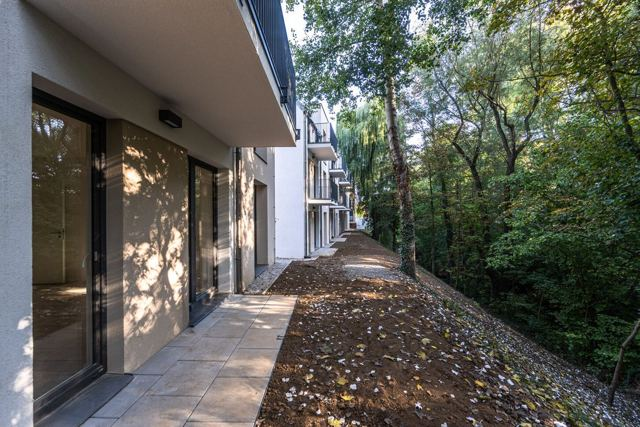
Dron nízko nad korunami na straně balkonů, zvedne se nad střechu se střešními okny.
Natočit: → řádky 11, 12
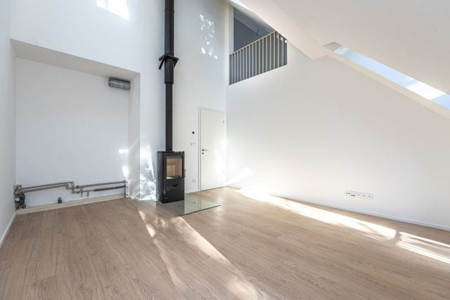
Vstup a pohled nahoru ke galerii a kouřovodu kamen, slunce z vikýřů. Stejný záběr se promění v zařízený byt.
Natočit: → řádky 28, 29, 30, 31, 42
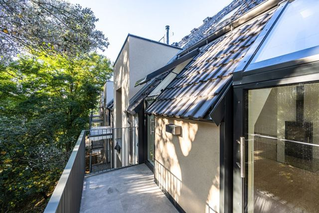
Vikýřem ven na balkon, výhled do stromů.
Natočit: → řádky 33
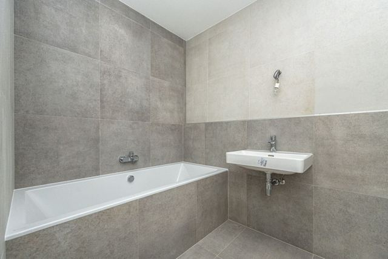
Ložnice a dětský pokoj zařízené ve vizualizaci, koupelna s vanou, samostatné WC.
Natočit: → řádky 35, 36, 37
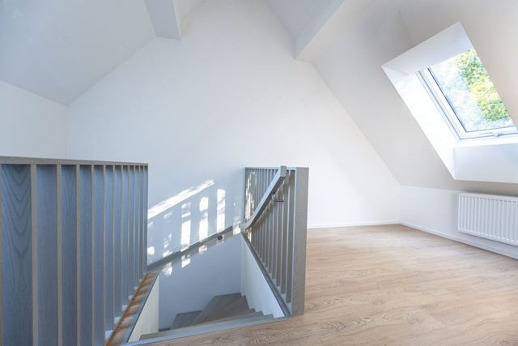
Po dubovém schodišti na galerii, ložnice pod střešními okny, pohled z galerie dolů do obýváku.
Natočit: → řádky 38, 39, 42
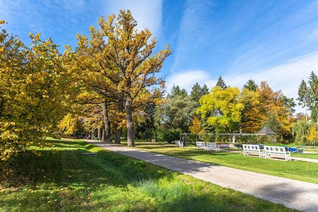
Park pár kroků od domu, prostřih ve videovizualizaci (strana balkonů v létě).
Natočit: → řádky 12, 13, 19, 24
Dron se vzdálí nad domy a park, koncová karta s Gepardem.
Natočit: → řádky 16
Lokalita druhé etapy. Titulky v barvách Verde (#435955, #a6aba9), písmo Etelka. Pořadí ve videu; natáčí se podle světla (Harmonogram a shotlist).
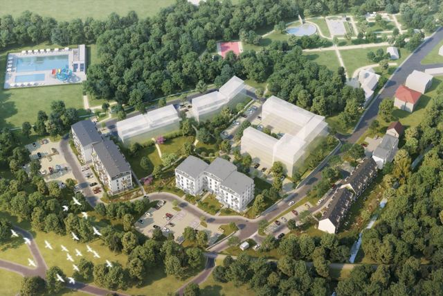
Dron vysoko nad Slaným, 3D mapa vyznačí park, plovárnu a druhou etapu.
Natočit: → řádky 3
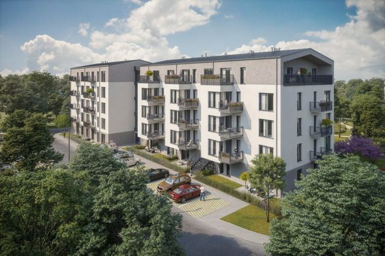
Dnešní stavba s jeřábem, nad ní patro po patru vyroste dům podle vizualizací architekta. Úhly D1–D4.
Natočit: → řádky 3, 4, 5, 6
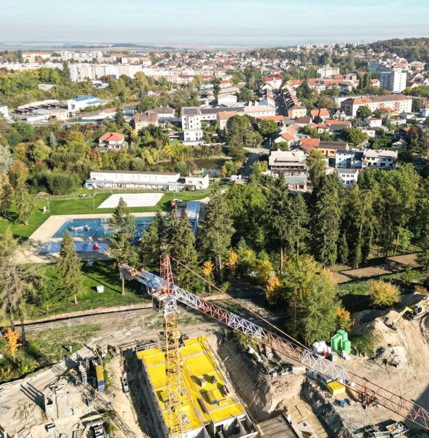
Dron ve výšce budoucího pátého patra (~14 m), otočka k parku a městu; terasa v 5. NP ve vizualizaci.
Natočit: → řádky 7
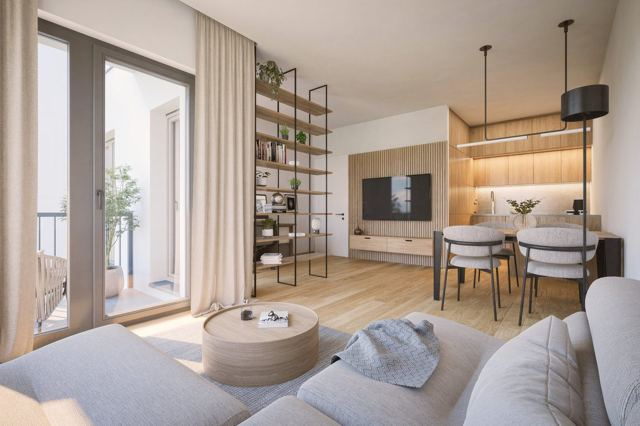
Interiéry architekta (int 0003, 0007) rozpohybované do videa.
Natočit: střih, grafika
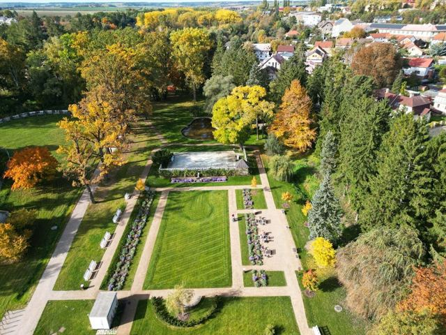
Zrevitalizovaná Kumpánova zahrada a plovárna hned vedle, prostřih ve videovizualizaci do léta.
Natočit: → řádky 13, 14, 19, 20
3D mapa s trasami do centra, k obchodům a na zastávku 388; záběry náměstí a autobusu.
Natočit: → řádky 15, 21, 22, 23
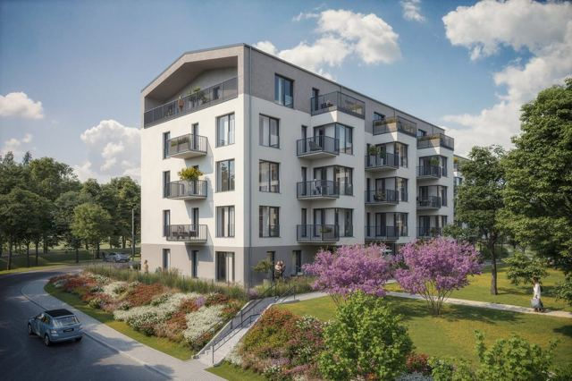
Stejný záběr jako na začátku, dům už stojí. Koncová karta s Gepardem.
Natočit: → řádky 5
Na výšku točíme hned u dronu a v mezonetu (řádky s 9:16). Ukázka stylu: reel Varnsdorf.
Na reklamu. Text v obraze, hudba. Natočit: → řádky 17, 29, 30, 32, 33, 38
| 0:00–0:03 | Prázdný obývák · Háček: prázdný obývák na výšku. Text: 93 M² · OBÝVÁK AŽ POD STŘECHU |
| 0:03–0:10 | Zařídí se · V jednom pohybu kamery se obývák zařídí. VIZ 1 |
| 0:10–0:16 | Galerie a balkon · Schody, galerie, balkon do korun. |
| 0:16–0:20 | Konec · Logo a kontakt. Text: POSLEDNÍ MEZONETY · BYTY BOROVSKÉHO |
Na reklamu. Text v obraze, hudba. Natočit: → řádky 4, 9, 14, 17, 23
| 0:00–0:03 | Stavba · Háček: dnešní stavba shora na výšku. |
| 0:03–0:10 | Dům vyroste · Ze stavby vyroste dům. VIZ 7–10 |
| 0:10–0:15 | Park a plovárna · Kumpánova zahrada, plovárna. Text: PARK VEDLE DOMU |
| 0:15–0:18 | Praha 35 min · Zastávka, autobus 388. Text: PRAHA ZA 35 MIN |
| 0:18–0:20 | Konec · Logo a kontakt. Text: VERDE SLANÝ · 2. ETAPA |
Tichá smyčka bez textu do hlavičky webu. Natočit: → řádky 6, 8, 19
| 0:00–0:10 | Dron nad parkem · Dlouhý plynulý průlet nad Kumpánovou zahradou. |
| 0:10–0:20 | Hotový dům · Průlet ke stavbě, dům je hotový; konec navazuje na začátek. VIZ 7–10 |